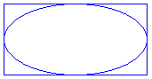
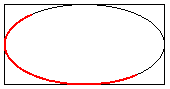

Эллипсы и дуги в GDI+
Можно без труда нарисовать эллипсы и дуги с помощью DrawEllipse и DrawArc методы Graphics класса.
Рисование эллипса
Чтобы нарисовать эллипс, вам потребуется Graphics объекта и Pen объекта. Graphics Предоставляет DrawEllipse метод и Pen объект сохраняет атрибуты, например, ширина и цвет линии, используемый для визуализации эллипса. Pen Объект передается в качестве одного из аргументов DrawEllipse метод. Остальные аргументы, передаваемые DrawEllipse указать метод прямоугольник, ограничивающий эллипс. На следующем рисунке эллипс с ограничивающим его прямоугольником.

В следующем примере рисуется эллипс; ограничивающий прямоугольник имеет ширину 80, в левом верхнем углу и высоты 40 (100, 50):
myGraphics.DrawEllipse(myPen, 100, 50, 80, 40);
DrawEllipse — перегруженный метод Graphics класса, поэтому существует несколько способов передачи аргументов. Например, можно создать Rectangle и передать Rectangle для DrawEllipse метод в качестве аргумента:
Rectangle myRectangle = new Rectangle(100, 50, 80, 40);
myGraphics.DrawEllipse(myPen, myRectangle);
Рисование дуги
Дуга является частью эллипса. Чтобы нарисовать дугу, вызовите DrawArc метод Graphics класса. Параметры DrawArc метод такие же, как параметры DrawEllipse метода, за исключением случаев, DrawArc требует начального угла и угла поворота. В следующем примере рисуется дуга с начальным углом 30 градусов и угол поворота, равный 180 градусов:
myGraphics.DrawArc(myPen, 100, 50, 140, 70, 30, 180);
На следующем рисунке дуги, эллипс и ограничивающий прямоугольник.
